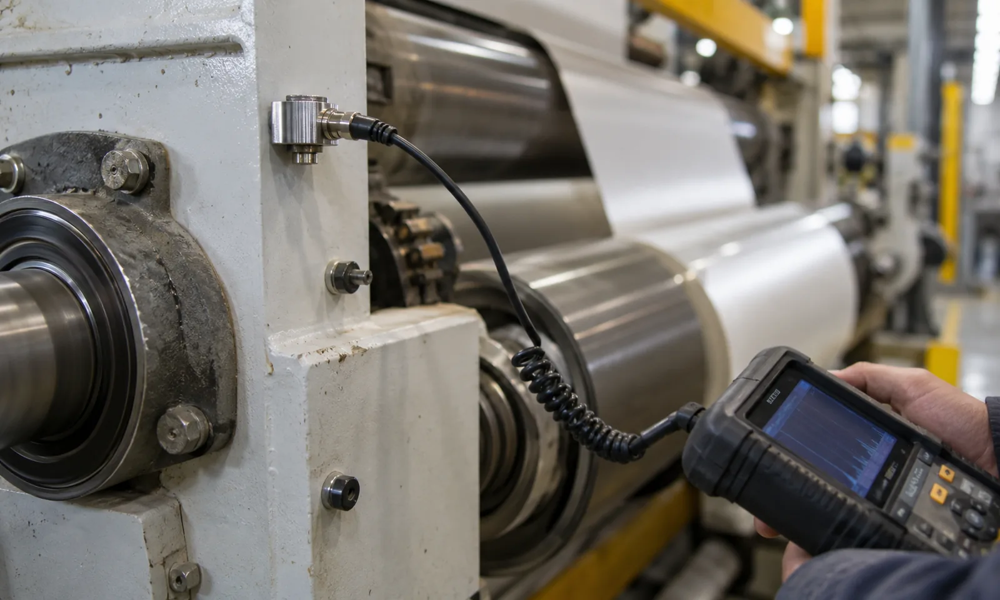

Published September 14, 2026 | By HDPTH Technical Editorial Team
Most slitter rewinder purchases are written around width, speed, material range, and roll quality. Vibration and noise are usually left as impressions: the machine looked smooth during the demo, or the showroom was quieter than the buyer expected. That approach works until the machine reaches full production speed in the buyer's own plant, where vibration shows up as web flutter, edge quality drift, bearing wear, and operator complaints, and where noise limits are enforced by workplace regulation rather than by preference.
This guide explains where slitter rewinder vibration comes from, which limits can realistically be written into a contract, and how to verify them at FAT and commissioning. It follows the same buyer-first approach as the roll defects troubleshooting guide, because vibration is one of the root causes behind many of the defects that guide helps you diagnose.
Where slitter rewinder vibration actually comes from
Vibration on a converting line rarely has a single cause. It is usually a combination of rotating imbalance, structural response, and process forces. The main sources a buyer should understand are:
- Unwind roll eccentricity and imbalance: a heavy roll that is out of round or mounted eccentrically acts like a rotating excitation source, and the effect grows with speed.
- Knife and holder condition: a worn, chipped, or poorly balanced knife assembly introduces periodic cutting forces that appear as banding on the slit edge and as vibration at knife-passing frequency.
- Bearings and drive components: preloaded, worn, or damaged bearings produce characteristic frequencies that a spectrum analysis can identify long before the operator feels them.
- Structural resonance: every frame has natural frequencies. If a running speed or a tension-related excitation lands on one, the machine amplifies what would otherwise be a small force.
- Web behavior: long free spans, insufficient nip load, or unstable tension control allow the web itself to flap or oscillate, feeding energy back into the frame.
The practical consequence for buyers is that vibration is a system property, not a component property. That is why it belongs in the machine specification, where the supplier controls the whole system, rather than being discovered roll by roll in production.
Which limits can be specified in the RFQ
Vibration and noise limits only work when they are measurable and tied to defined conditions. A practical specification contains the following elements:
| Specification item | What to define | Why it matters |
|---|---|---|
| Measurement points | Named bearing housings on unwind, slitting, and rewind stations | Prevents arguments about where the sensor was placed |
| Measured quantity | RMS vibration velocity, typically in the 10–1000 Hz band | Velocity correlates with machine condition better than raw acceleration at converting speeds |
| Operating condition | Percentage of maximum speed, material type, roll diameter, and tension during the test | A limit means nothing without the condition it applies to |
| Limit value | A number agreed with the supplier, informed by a recognized classification such as ISO 20816 machine groups | Turns acceptance from opinion into data |
| Noise declaration | A-weighted sound pressure level at the operator position at maximum speed, measured under a defined method | Connects the machine to workplace noise limits at the destination |
Buyers do not need to invent these numbers from zero. Vibration severity classification standards for industrial machines give defensible bands, and the supplier can state what its design achieves at the quoted maximum speed. What matters is that both parties sign the same numbers before the machine is built.
How vibration and noise are verified at FAT
Factory acceptance testing should include a measurement session, not just a visual run. A credible sequence looks like this:
First, the machine runs at agreed speeds with the buyer's material or a defined substitute, and the operator station runs through the full speed range. Second, a calibrated vibration instrument measures RMS velocity at each named bearing housing, and the readings are recorded with the running condition. Third, the spectrum is reviewed so that any dominant frequency can be traced to a source, such as a knife-passing frequency or an unwind imbalance. Fourth, the sound pressure level is measured at the operator position with the machine at maximum speed and with the agreed background noise conditions.
The results belong in the FAT report with the same status as mechanical checks. If a reading exceeds the limit, the supplier should identify the source, correct it, and repeat the measurement. For buyers building an overall acceptance framework, this pairs naturally with the FAT checklist and the commissioning checklist.

Why installation changes the result
A machine that passed FAT can still vibrate differently after installation. Foundation stiffness, anchor bolt quality, shaft alignment, and the influence of neighboring equipment all modify the structural response. This is not a contradiction of FAT; it is a second layer of acceptance. The purchase contract should therefore include a commissioning recheck at representative production speeds, with the same measurement points and limits as FAT, plus a defined path for corrective action if the readings have moved.
Buyers planning the installation side in parallel should review the site preparation checklist, because foundation and utility planning directly influence the vibration behavior the machine will show in the plant.
What to put in the RFQ
To make vibration and noise acceptance real, the RFQ should include: the maximum production speed the limit applies to; the material families and roll diameters used during the test; the named measurement points; the limit values and the classification reference; the noise declaration requirement with the operator position and measurement method; and the requirement that both FAT and commissioning measurements appear in the acceptance report. If the destination market has specific workplace noise regulations, name them, so the supplier designs and documents accordingly.
Suppliers who already measure these values internally will answer without hesitation. Suppliers who resist a measurable limit are asking the buyer to accept all vibration risk after delivery, and that risk is much more expensive to fix after installation than to specify before quotation.
Want vibration and noise limits written into your machine specification?
Send your material, width, maximum speed, and destination workplace requirements through the inquiry page. HDPTH will propose measurable acceptance values for the RFQ and include both in the FAT plan.
Start Your RFQBuyer FAQs
What are the most common causes of vibration on a slitter rewinder?
The most common causes are out-of-round or unbalanced unwind rolls, worn or poorly balanced knife holders, bearings that are preloaded or worn, frame resonance at certain running speeds, and web tension settings that excite the natural frequency of the span between rollers.
Should buyers specify vibration limits in the RFQ?
Yes. A practical RFQ states the maximum machine speed, the housing vibration velocity limit at defined measurement points, the material and roll quality the machine must demonstrate, and the reference standard used to judge the results, so that acceptance is measurable rather than subjective.
What noise level should a slitter rewinder meet?
Many buyers ask the supplier to declare the A-weighted sound pressure level at the operator position at maximum speed, measured under defined conditions. The applicable workplace noise limits depend on the destination country, so the buyer should state those requirements in the RFQ and verify them during acceptance.
How is vibration verified at factory acceptance testing?
The supplier runs the machine at representative speeds with representative material or a defined substitute, measures vibration velocity at agreed bearing housings with a calibrated instrument, records the spectra, and compares the results against the limits written in the purchase specification.
Can vibration problems appear only after installation?
Yes. Foundation stiffness, anchor quality, alignment, and the interaction with nearby equipment can change the vibration behavior after installation. That is why buyers should keep a commissioning recheck in the contract instead of treating FAT as the final word.
Sources
- ISO 20816-1: Mechanical vibration — Measurement and evaluation of machine vibration
- OSHA 29 CFR 1910.95: Occupational noise exposure
- EU Machinery Directive 2006/42/EC: essential health and safety requirements
Define the acceptance numbers before the machine is built
Send your production requirements and destination regulations to HDPTH through the inquiry form. If you are still comparing machine types, review the nonwoven slitter rewinder buying guide and the roll defects troubleshooting guide.
Contact HDPTH for Project Review